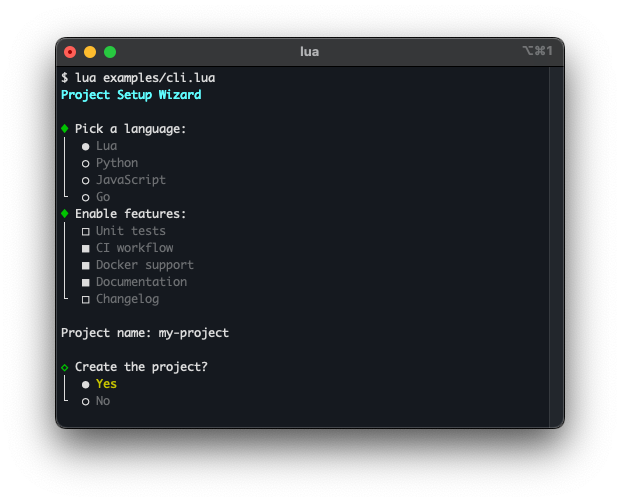

4. CLI widgets
CLI widgets are interactive components for command-line applications. They run inline in the terminal — no full-screen takeover needed — and handle keyboard input, rendering, and state internally. All widgets support non-blocking operation and can be integrated into a coroutine-based event loop.

Radio buttons — cli.Select
cli.Select presents a list of options and lets the user pick exactly one. Navigation is done with arrow keys; Enter confirms the selection. The widget renders and returns the chosen value.
See the cli.Select class reference for the full API.
Checkboxes — cli.MultiSelect
cli.MultiSelect presents a list of options where any number of items can be toggled. Space toggles the focused item; Enter confirms the selection and returns the set of chosen values.
See the cli.MultiSelect class reference for the full API.
Line editor — cli.Prompt
cli.Prompt reads a line of input from the user with full editing support (cursor movement, delete, backspace). Because input is non-blocking, background tasks can run while the user types.
See the cli.Prompt class reference for the full API.
Confirm dialog — cli.Confirm
cli.Confirm displays a configurable confirmation prompt such as OK/Cancel or Abort/Retry/Ignore. The user selects an option with arrow keys or a hotkey shortcut.
See the cli.Confirm class reference for the full API.
Progress — terminal.progress, progress.Bar
terminal.progress provides a spinner for indeterminate tasks. progress.Bar renders a progress bar for tasks with a known completion percentage.
See the terminal.progress and progress.Bar class references for the full API.